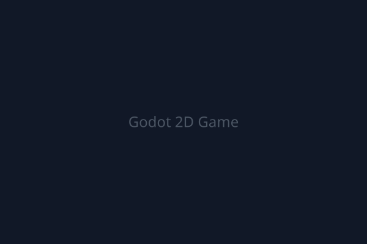
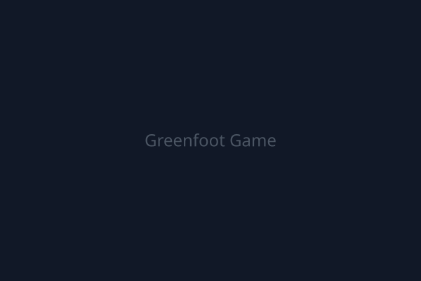
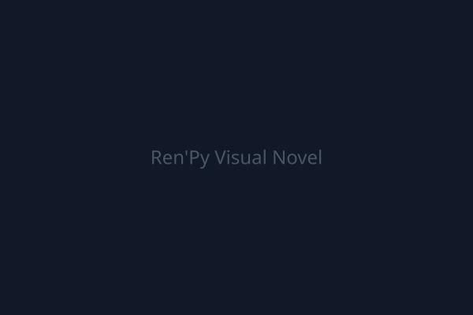

Hi, I'm Heri.
Student Developer
Game Development • Programming • Creative Projects
const developer = {
name: 'Heri Purnama',
status: 'Vocational High School Student',
interests: ['Games', 'Code', 'Art'],
isLearning: () => true
};{ About Me }
I am a vocational high school student with a deep passion for programming, game development, and the creative intersection of technology and art.
My journey started out of curiosity—I wanted to know how games were made. Since then, I've been actively learning by building my own projects, experimenting with different languages like Python, C++, and GDScript, and diving into various digital tools.
When I'm not coding or exploring engines like Godot and Roblox Studio, you can find me experimenting with pixel art, game music production, or catching up on anime. I'm always looking for the next exciting technology to learn.
{ Skills & Tools }
Programming
Web
Game Dev
Creative & Other
{ My Journey }
Started Learning Programming
Discovered the world of code. Learned logic, basic syntax, and how to write my first scripts.
Exploring Game Development
Began experimenting with game engines to bring interactive ideas to life.
Building Personal Projects
Transitioned from tutorials to creating my own standalone games and digital experiences.
Learning Web Development
Started exploring HTML, CSS, and JavaScript to build web applications and digital portfolios.
Experimenting With Creative Tools
Diving into FL Studio for music, pixel art tools, and Blender to expand my creative toolkit.
Building My Portfolio
Compiled my journey and projects into this personal workspace to document my ongoing growth.
{ Projects }
Harvest Havoc Farm
A tabletop card game concept featuring farming mechanics, crop and skill cards, weather events, sabotage, and a coin economy system.

Godot 2D Game
A 2D platformer/action game utilizing Godot Engine. Features character movement, gravity, collision detection, camera tracking, and a game over system.

Greenfoot Library Game
A Java-based game built in Greenfoot. Involves a library environment where the player acts as a librarian managing NPC students, with spawning and collision mechanics.

Ren'Py Visual Novel
An interactive storytelling experience created with Ren'Py. Includes character sprites, a dialogue system, scene transitions, and branching story choices.
Personal Portfolio
A custom-built, responsive website designed to showcase my programming journey, creative projects, and technical skills.
{ Contact }
Feel free to reach out if you want to talk about games, coding, or potential collaborations.